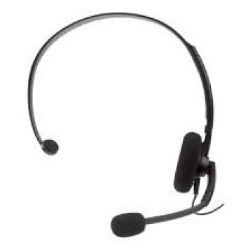

Do you ever feel like your microphone quality is just too good? Do you ever miss the days where you would hop online with your friends and occasionally their microphone peaks causing an annoying but funny sound? Well at Terrible Microphones our goal is to provide Terrible Microphones to all who want them. Whether you miss that nostalgic sound of a microphone peaking, or you need a cheap microphone for gaming and chats with friends, we've got the perfect selection of microphones that have terrible quality but still work reasonably well.
We've got a variety of microphones, from head sets, to recording style mics, any trashy mic you could desire, we have gathered together. Simply click here to find out more.
